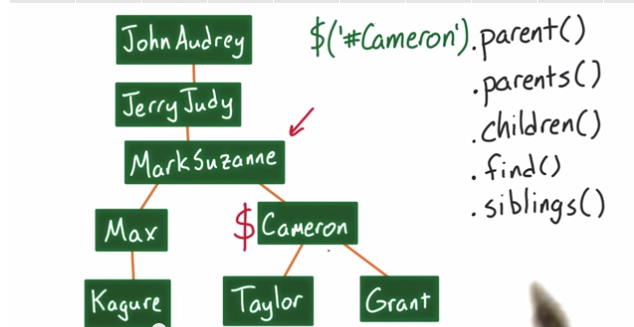

I've learned terminology like tags and elements (tag - content - tag) in HTML. I have learned that there are different types of tags, some require attributes and some impact the text by putting it in a "box" (the"block" elements.) The body of the web page is most important, and is the focus of this learning. Complex information is in the header, and is important also.
I've learned that computers will follow these direction precisely, even if they are incorrect directions.
I've learned that repetition wastes time and can introduce errors.
The important things to take away from this are:
To learn more about "tree-like structure" refer (look it up if you forget!) to the wikipedia article on Tree Structures.
CSS is a cascading style sheet, and is a way to define how you want your class to look. It makes a lot more sense when you realize that class is a user-defined field, and you define the field in the style sheet. This significantly contributes to reduced repetition and also makes all of your similar elements look and behave the same.
In CSS, code comments begin with /* and end with */.
HTML elements are boxes and each box has 4 components (center out: content, padding, border, margin.) If you set sizing in % instead of pixels, it will re-size more properly on different size screens. Also , it is important to set the box-sizing attribute to every element to this:
* {
-webkit-box-sizing: border-box;
-moz-box-sizing: border-box;
-ms-box-sizing: border-box;
box-sizing: border-box;
}
Some other tips:
Here are some terms to understand:
Python is a language we will use, and it is also a program that will interpret the language we write into something the computer can understand. This is known as an Interpreter. Another program that will help write code is a Compiler, which will write new programs for you using its code, all at one time.
Python uses Grammar like Sentence = Subject Verb Object. In this example, the Subject Verb and Object are Non-Terminal items. Non-terminal means something you are not finished with, and you keep replacing with a replacement based on the defined rules until you get to a Terminal.
Rule example: Non-Terminal -> Replacement
Terminals never appear on the left side of a rule.
Python uses expressions as well. The rules are similar, replace Expressions with a number, number operator (like + ) number, or another Expression:
Expression -> Expression Operator Expression
Expression -> Number
Actual numbers and operators are terminals on the right side of the rule
Variables are a way to assign meaning to a number, like a description. This is so you can then use the descriptive term for the number in the future to reduce confusion and make it easier to see how the number is being used logically. For example:
Strings are lines of text surrounded by one or two quotes. You can use either to allow you to use the text version of the other kind of quotes within the string. You can define a string with a variable name, just like the number example above, then use that variable name as shorthand. Once you have the string defined, you can work with text within the string with two commands: INDEX and FIND.
Find is a function that finds a target string within the original string and returns the number of the character where the target begins. The syntax is string1.find(string2). There is another parameter you can add, so that the computer will begin looking for string2 at a particular character within string1, like string1.find(string2,4) will begin looking for string2 within string1 at character 4. This is helpful if you are looking for multiple instances of string2 within string1 since .find without the second parameter will only return the start of the first instance of string2.
Putting these two together is helpful - find the start of string2 then print the remainder of string1 from that point to confirm you found it. Like so:
A function is something that takes is defined by the developer and then takes input, does something, and then produces output. For example, a function named sum could take a user-defined number of inputs and add them if they are digits or concatenate them if they are strings as output. The developer names it sum so it makes sense, but it could be called anything since it is user defined. One first creates the function, then can use it many times over without having to re-define it. This is another example of eliminating repetition.
A function is written with a "def" (define) then a label, followed by inputs in parantheses. Every instruction line after the definition of the name must be indented. The final line of the function MUST include a return staetement, what you want the function to return in the end, or it won't actually do anything. However, there are times when you don't wantthe code to do anything yet, so you end the procedure with the term pass rather than return.
Here is an example of sum:
To use a function, we write the name of the function followed by the value(s) we want to give it in parentheses. Like this:
Here is my first Python code to create HTML. The next section is what the code produced!
I think I understand how this could really help speed up coding in HTML, but the triple quotes really stumped me!
Here is Andy's code, with a few edits to match my CSS structure.
Wow, this is really complicated! I really hope this works!
Operators provide a means for comparision and returns a Boolean 'True' or 'False.' They include
Here is an example of a test exression using operators:
Here are some examples we used in class:
We used this 'bigger' function in a harder example that could be solved two ways:
Or it can be solved using the "bigger" function:
Example: Define a procedure, greatest, # that takes as input a list of positive numbers, and returns the greatest number in that list. If the input list is empty, the output should be 0.
Operators can also be used with text. The example we covered was to return "True" if a person's name started with "D" or "N":
Loops use a "While" function to repeatedly evaluate if the test expression is true and perform the block of code repeatedly as long as the expression is true. A Break is used to stop the loop while the test expression is still true, and provides the ability to move to the next block of code. The code stops running when the test expression is false, and moves to the next block of code. Here is an example to count numbers from 1 to a defined number, including the defined number:
First develop a strategy for your code:
Structured data can be strings or lists. A string is a sequence of characters, but the list is a sequence of ANYTHING. You use INDEX features in lists, just like strings.
[] = an empty list
Here is a string and list comparison:
| Strings | Lists |
|---|---|
| s = 'yabba!' | p = ['y','a','b','b','a','!'] |
| s[1] returns 'a' | p[1] returns 'a' |
| s[2:4] returns 'bb' | p[2:4] returns ['b','b'] |
Lists support mutation (strings do NOT)- you can change the value of the list after it is created without creating a new object. You assign a new value similar to index:
Procedures do not need a return statement when replacing an item in a list
Append - This is similar to the 'find' method and works like a procedure. It mutates the list to add at the end of the list. It does NOT create a new list but edits the existing list.
Example:
Example: Define a procedure, measure_udacity, that takes as its input a list of strings, and returns a number that is a count of the number of elements in the input list that start with the uppercase letter 'U'.
Example: Define a procedure, find_element, that takes as its inputs a list and a value of any type, and returns the index of the first element in the input list that matches the value. If there is no matching element, return -1.
There are two solutions reviewed:
OR
An alternative solution is using INDEX method: - if value is in the list it returns the first position where value is found, otherwise produces an error
Syntax list.index(value)
Another operation required for the alternate is the IN procedure.
Syntax is value in list
for opposite meaning.
Returns 2 because 3 is in character space 2 in the list starting at 0.
Returns -1 because gamma does not appear in the list.
From Adobe: "Object-oriented programming is a style of programming that focuses on using objects to design and build applications. Think of an object as a model of the concepts, processes, or things in the real world that are meaningful to your application. For example, in a project management application, you would have a status object, a cost object, and a client object among others. These objects would work together (and with many other objects) to provide the functionality that you want your project management application to have. Developers choose to program in the object-oriented paradigm because the proper use of objects makes it easier to build, maintain, and upgrade an application." In addition, it allows use of independently developed and tested modules that can be put together for a large project or used separately for a small one. It allows the programmer to think about the objects that are the end goal, then develop code to support the object goals. This is opposite of procedureal programming, which thinks about the how process before the object of the process. It works better for the beginner to conceptualize, I think.
It is clear that python is using object-oriented programming as each module focuses on a single meaningful subject, then modules are put together. HTML is also fundamentally object-oriented because you first define the "what" you are trying to build, determine the end goal, then figure out how to do it in meaningful boxes, or "objects." Similar to the inheritance properties that instances of a class obtain from the parent in python, the CSS class is a singly developed style 'package' that can be used many times to provide the same properties to every instance of the class application in HTML.
| Term | Description |
|---|---|
| Object | An object is a self-contained component that contains properties and methods needed to make a certain type of data useful. An object's properties are what it knows and its methods are what it can do. |
| Class | Neatly packaged 'box' that puts things together, like a blueprint of a building. The 'blueprint' contains enough generic information about the building that the same blueprint can be used to create many similar buildings. Similarly, the class contains pieces of info about the class, so you can use it to create multiple objects from the class. The objects created are instances. |
| Instantiation | An instance is a specific object built from a specific class. It is assigned to a reference variable that is used to access all of the instance's properties and methods. When you make a new instance the process is called instantiation. Adobe has a great analogy: "Think about classes, instances, and instantiation like baking a cake. A class is like a recipe for chocolate cake. The recipe itself is not a cake. You can't eat the recipe (or at least wouldn't want to). If you correctly do what the recipe tells you to do (instantiate it) then you have an edible cake. That edible cake is an instance of the chocolate cake class." |
| init | A blank () is calling a function from the class called init (stands for initialize) that creates space in memory for a new object for the class. The init function inside the class is a Constructor, and when you create a class you must include the definition for init in reference to self (always the first parameter) to be able to construct new instances. Example: class Student(object): '''3 single quotes document the class (or to document a module.) When you type "doc" then Python will return the doc string.''' def __init__(self, name, id = 20001): self.name = name self.id = id |
| Python Standard Library | Python includes a standard library that provides built in modules that provide standardized solutions for many problems that occur in everyday programming. We learned about OS, Turtle, Time, and Webbrowswer standard modules. I practiced Library on my own, and tried a few others but was not hugely successful. |
| The from...import Statement | Python's from statement lets you import specific attributes from a module into the current namespace. The from...import has the following syntax: from modname import name1[, name2[, ... nameN]] For example, to import the function fibonacci from the module fib, use the following statement: from fib import fibonacci This statement does not import the entire module fib into the current namespace; it just introduces the item fibonacci from the module fib into the global symbol table of the importing module. For our Twilio example: When I downloaded Twilio, it contained a folder (twilio) which contained another folder (rest) which contained a class (TwilioRestClient). When we say rest.TwilioRestClient() we are really calling the __init__ function defined in the class, and this creates an instance. We call this instance "Client" in the example how to use this class below. From twilio.rest import TwilioRestClient
This means from the twilio module, go to the rest folder and we are going to use the class TwilioRestClient from that folder and define the client attribute as such: Client = TwilioRestClient(account_sid, auth_token)
OR you can say From twilio import rest
To tell the program to import the entire rest folder from the twilio module and define the client attribute as such: Client = rest.TwilioRestClient(account_sid, auth_token) |
| Method | It's a function which is a member of a class. A function is a named piece of code that performs an operation, and a method is a function with an extra parameter which is the object that it's to run on. |
| Instance Variables | All variables specific to an instance, uniquely associated with every instance of a class |
| Instance Method | A function defined within a class is called an Instance Method |
| Class Variable - | variables apply to all instances of a class, like the same movie ratings apply to all movie instances |
| Inheritance | parent & children |
| Method overriding | Child method overrides the parent method with the same name |
| Abstraction | Steve Jobs explained it this way: "Objects are like people. They are living, breathing things that have knowledge inside them about how to do things and have memory inside them so they can remember things. And rather than interacting with them at a very low level, you interact with them at a very high level of abstraction, like we are doing right here. Here's an example: If I'm your laundry object, you can give me your dirty clothes and send me a message that says, 'Can you get my clothes laundered, please?' I happen to know where the best laundry place in San Francisco is. And I speak English, and I have dollars in my pockets. So I go out and hail a taxicab and tell the driver to take me to this place in San Francisco. I go get your clothes laundered, I jump back in the cab, I get back here. I give you your clean clothes and you have no idea how I did that. You have no knowledge of the laundry place. Maybe you speak French, and you can't even hail a taxi. You can't pay for one, you don't have dollars in your pocket. Yet I knew how to do all of that. And you didn't have to know any of it. All that complexity was hidden inside of me, and we were able to interact at a very high level of abstraction." |
I searched for a video that you might find entertaining...
The browser makes a request via the internet to the servers generally using Hyper Text Transfer Protocol. After the connection to the host is made, the HTTP request line includes the method of server request (commonly GET (default method) to obtain a document from the server, or POST to send information to the server,) the path (document requested from server,) and HTTP version. The request lines include many headers. The server responds with files or response that the browser requested. The servers are optimized for hosting files that make up the web. Query parameters (AKA GET parameters) add an additional parameter in the URL, separated by a ? for the first parameter and & for additional parameters. This provide additional information to the server. Fragments (indicated by a leading #) are not sent to the server.
| GET | POST |
|---|---|
| Parameters in url | Parameters in body |
| Used for fetching documents | Used for updating data |
| Maximum URL length | No theoretical max length (but can be configured) |
| Okay to cache | Standard not to cache |
| Shouldn't change the server | Generally used to update the server |
The server responds to the HTTP request line with a status line, that includes the HTTP version and a status code with the status reason phrase. The status line is also followed by headers, similar to the client request line.
Servers will provide a static or dynamic response to the requests. The static response is a pre-written file like an image. The dynamic response is created as a response to the client request by a running web application, a program to generate content that the browser requested.
RESPONSE - represents the response that the server will send back to the client
REQUEST - represents the request that came from the browser, you can call get on it to get different parameters
Validating on the server side that we received what we expected to receive to make sure your server can handle broken data submitted by a browser. This is particularly a problem if the browser sends HTML (it must be escaped and returned as text,) inappropriate data, or malicious entries.
Since users have a preference for different browsers, it is necessary to validate the input from all browser types since they behave differently. It is best to use validation on the server in case the user may be using a browser that you are not familiar with and may not have tested.
A template library is a library to build complicated strings. This can be any string but when developing web applications it is primarily referring to HTML strings.
Jinja2 is a template library application that is built into the Google webapp2. To use it, add your library reference to the app.yaml file:
Import jinja2 into your python file.
{{ link.name }}{% endfor %}
Enter your helpful links here!
Variables are very similar in Java as Python, but just use the prefix var when declaring a new variable. Strings are in quotes. All numbers are saved as integers.
var firstName = "james";
var age = 44;
Var myArray = [ ];
Var myFunc = functions( ) { };
Var myObject = { };
___________________________________
JavaScript is the programming language used to make websites come alive. It often does so by manipulating a website's HTML. Javascript runs natively in the browser and provides a way to save data in the form of variables. Declare new variable with 'var' regardless of data you are saving.
The Mozilla Developer Network (MDN) is a fantastic resource for all things web and JavaScript
___________________________________
Exercise: Manipulate s to make it equal to "Udacity"
};
___________________________________
Java has a set of values that evaluate to true or false, but do not equal true or false:
| Truthy | Falsy |
True Non-zero numbers "strings" Objects Arrays Functions |
False 0 " " Undefined(variable doesn't exist and interpreter does not know what to do with it) Null NAN (not a number) |
The following values are always falsy:
All other values are truthy, including "0" (zero in quotes), "false" (false in quotes), empty functions, empty arrays, and empty objects.
var a = !!(0); // variable is set to false
var b = !!("0"); // true
From Sitepoint
___________________________________
Lists of values like python
Example to increment the last number in an array of numbers. Your code should make newArray equal to an array that has the same values as _array, but the last number has increased by one.
For example, _array = [1, 2, 3];
turns into: newArray = [1, 2, 4];
};
newArray = _array.slice(0);
Just like string.slice(begin, [end]) separates the characters of a string, array.slice(begin, [end]) separates the elements of an array from the index of the begin up to but not including end. We want to make a copy of the original array, so we won't include an [end]. At this point, newArray is a copy of the original _array.
var lastNumber = newArray.pop();
The array.pop() method conveniently gives us (or returns) the last element of the array, which in this case is the number we want to increase by 1. However! Be careful because array.pop() actually removes the last element of the array. This is why we made a copy in the previous line, so we wouldn't modify the original _array.
newArray.push(lastNumber + 1);
Just how the jQuery .append() method adds an element to the end of an HTML block, the array.push() method adds an element to the end of an array. Here, we're .push()ing the lastNumber + 1, which is exactly what we wanted to do.
And with that, we've got our newly incremented array!
From Udacity Course Meet JavaScript
Example: Write a function that will change any name into Capitalized first name and all caps last name:
console.log(nameChanger(name));
The more elegant solution is to join on finalName, adding an optional space between them in the join function:
finalName = names.join(" ");
___________________________________
There are no classes in Java!! Only objects... objects are more like Python dictionaries than classes, defined in curly brackets. Arrays are types of objects. It is not necessary to define a variable (use var) when using dot notation:
Bio.city = "Raymond";
Bio.email = "blhutchinson@bellsouth.net"
I would do the above to add new properties to the object, not create new variables
You can add to an array by appending with dot notation or brackets, and can access it with either dot or bracket notation.
var work = {};
work.position = "Sr. Program Manager";
work.employer = "AT&T";
work.years = 11;
var education = {};
education["name"] = "Southern Methodist University"; education["years"] = "1996 - 1998"; education["city"] = "Dallas, TX, US";
$("#main").append(work["position"]);
$("#main").append(education.name);
___________________________________
Here is an example of nested objects:
var education = {
"schools": [ (<- comment: starting an array with an open bracket)___________________________________
Notes from Udacity & Mozilla:
As part of the process of building websites, browsers convert all of the HTML they receive into a JavaScript object called the Document Object Model (DOM), which contains all of the information about a website's visible elements. In fact, from the console, you can examine the DOM for any website (including this one!). By examining the DOM, you can learn pretty much everything about a website. Document in Java is the DOM. We need to change the DOM if we want to add or remove page elements.
getElementById(id) is a DOM manipulation method that will grab a single page element object with the id given. Notice how the word Element is singular in the method name. That means it returns a single page element. Other DOM methods containing Elements, like getElementsByClassName(), will return an array of page elements.
The Element interface represents an object of a Document. This interface describes methods and properties common to all kinds of elements. Specific behaviors are described in interfaces which inherit from Element but add additional functionality. For example, the HTMLElement interface is the base interface for HTML elements, while the SVGElement interface is the basis for all SVG elements.
.styleis a DOM property. It is used to change a CSS style of the selected page element. The property that follows .style is the CSS style that will be modified by this piece of code. Here's a list of all the possible CSS Properties you can change.
To make sure a user can't input HTML into your JSON form to hack it, turn < and > from HTML into harmless strings.
var html = '<script src="http://hackyourwebsite.com/eviljavascript.js"></script>';
var charEscape = function(_html) {};
console.log(charEscape(html));
returns:
LOG: '<script src="http://hackyourwebsite.com/eviljavascript.js"></script>'
This follows the standard format:
string.replace(old, new)
g - Global replace (If this flag is specified, all occurrences of the regular expression within the originalString are replaced. Otherwise only the first occurrence is replaced.)
>i - Case insensitive match (If this flag is specified, the match is performed in a case insensitive fashion.)
**Bracket notation always works. Dot notation requires properties that begin with a letter and do not include special characters.
document.createElement('pre');
is the same as
document['createElement']('pre');
console.log(weirdObject.property);
is the same as
console.log(weirdObject["property"]);
___________________________________
Java uses evaluators similar to Python.
<, >, <=, >=, !=, === (uses 3 equal symbols for equal to, can use 2 equal symbols but it is not as safe)
If statement syntax: conditions are in parentheses, the action is in curly braces, and there is no colon at the end of the if condition statement
if(condition) {
doSomething();
} else {
doSomethingElse();
}
Example:
if (tired === true) {
drinkCoffee();
} else {
drinkWater();
}
___________________________________
Similar to Python: While Loop continues to do a piece of code while an evaluated condition is true. When it is no longer true, it exits the loop. Conditions are in parentheses, the action is in curly braces, and there is no colon at the end of the while condition statement.
while(condition) {
doSomething();
}
For Loops are different, they have 3 inputs:
Syntax:
for(initialization; condition; mutator) {
doSomething();
}
The For In loop allows you to iterate over an array of objects. The item is the INDEX in the list, not the value of the item
Syntax:
for(item in object){
doSomething();
}
Example:
var countries = ["Germany", "Argentina", "Brazil", "Netherlands"]
for(country in countries){
console.log(country);
}
Prints 0 1 2 3 on the console log because it is the INDEX. To print the countries, change it to this:
var countries =
var countries = ["Germany", "Argentina", "Brazil", "Netherlands"]___________________________________
Functions bundle instructions together. The purpose of RETURN statements are to make the function give back a value. This is why you see console.log returning back "undefined." Split acts on a string and separates it based on a parameter in the parens. Objects are in curly braces, and functions are objects. Most items in Java are objects. Functions are defined with two different syntaxes. There are subtle differences in how Java uses them, but they are similar:
var myFunc = function(parm1, parm 2){
//code goes here
//parameters are optional
}
Or
function myFunc(parm1,parm2){
//code goes here
//parameters are optional
}
Example of return:
var myString = "This is my favorite string!"
var myArray = myString.split(" ");
Will come back on the console: "undefined" Unless you then invoke
myArray
Then it returns
["This", "is", "my", "favorite", "string!"]
The split function returns the split string into the array.
___________________________________
Java has many ways to say the same thing. These are all equivalent so you need to understand them to read other people's code.
Literal notation:
var bio = {
"name" : "Brenda Hutchinson"
}
Dot notation:
bio.name = "Brenda Hutchinson";
Bracket notation:
bio["name"] = "Brenda Hutchinson";
___________________________________
Anonymous functions don't have a name, here are examples of how they can change your code:
Example 1
var outsideExample = "First string";
function example() {
var outsideExample = "Second string";
}
example();
console.log(outsideExample); // "First string"
Example 2
var outsideExample = "First string";
function example() {
outsideExample = "Second string";
}
example();
console.log(outsideExample); // "Second string"
In the first example, notice that we're using var within example(). var means we're declaring a new outsideExample variable within example(). There are two outsideExamples in our program, one with a global scope ("First string") and one with a function-level scope inside example(). After we run example() and try to log outsideExample, we'll log the global version of outsideExample, which is "First string" because console.log() doesn't have access to the version of outsideExample that was created within example().
A global scope means that the variable is accessible anywhere inside our program, which is why we don't need to use var in example 2. In example 2, there's only one version of outsideExample because we aren't declaring a new variable inside example(). Instead we're simply modifying the value of the original global variable outsideExample, which is why we log "Second string" at the end of example 2. From Udacity course JavaScript Basics
There are two syntaxes to declare functions:
var functionName = function() {}
and
function functionName() {}
The JavaScript interpreter, which is responsible for taking the code you write and preparing it to become machine code, will handle the two function declarations slightly differently because of the way it handles variable declarations. All variable declarations will immediately get moved to the top of their scope. For example:
var x = 5;
console.log(x); // 5
var y = 10;
is the same as
var x, y; // this line simply declares x and y at the same time.
x = 5;
console.log(x); // 5
y = 10;
Notice how the declaration of y moved to the top of the scope. And also notice how the first line doesn't set a value for neither x nor y. After var x, y; both x and y are undefined. The same behavior holds true for other types of variables, including functions. If you use the var functionName syntax, only the function's declaration (e.g. var functionName;) gets moved at the top of its scope. However, if you use function functionName() syntax, the function declaration and definition (the actual instructions inside the function) get moved to the top of the function's scope. From Udacity course JavaScript Basics
example1();
function example1() {
console.log("Ran the example");
}
Logs //Ran the example
example2()
var example2 = function() {
console.log("Ran the example");
}
Logs // TypeError: example2 is not a function
___________________________________
jQuery is the most popular JavaScript library today, in use by over 60% of the top 100,000 most visited websites. jQuery is simply a JavaScript object! jQuery is popular, easy to use, makes selecting DOM elements and manipulating them simple by providing a consistent API that works across all browsers. It exists so developers can focus on the user experience, not browser compatibility. Check out the jQuery website to learn more and look up specific library items. jQuery returns an object that looks and behaves like an array, but also includes additional methods. jQuery and the "$" character are mapped to the exact same thing. Other libraries also map the "$" to a variable.
You can pass in strings or functions or DOM elements.
$("#foo");
You can call methods on the jQuery:
$.ajax() (Check out the ajax class for info)
Add jQuery to any website using script tags:
Local: <script src='js/jquery.min.js'></script>
Official: <script src='//code.jquery.com/jquery-1.11.1.min.js'></script>
Content Delivery Network (CDN)
(like Google: <script src='//ajax.googleapis.com/ajax/libs/jquery/1.11.1/jquery.min.js'></script>
Using CDN is recommended - faster and allows caching. .min is the minified version = faster
jQuery makes it easy to select elements or a collection of elements in the DOM. jQuery selectors quickly access them. The selectors are really just strings in the jQuery object. Examples:
$('tag') - will result in a collection of all the elements with that certain tag, like 'div' or 'h2'; not the best method
$('.class') - more specific collection than tags; don't forget the period at front! It is essentially a CSS selector
$('#id') - specific to one ID element.
Check that you have what you want by looking at the console log:
console.log(variable);
___________________________________
Traversing is a method to select parents and children of the item you selected in the HTML DOM structure.
In this example, $('#Cameron').parent() returns up one level, #MarkSuzanne
$('#Cameron').parents() returns up one level, #MarkSuzanne, #JerryJudy, and #JohnAudrey - all parents
$('#Cameron').parent(#JerryJudy) returns only #JerryJudy
$('#Cameron').children() returns #Taylor and #Grant, only one level down
$('#Cameron').find() goes down the DOM more than one level, many levels down
$('#Cameron').siblings() returns #Max, a collection of all items with the same parent of #Cameron
->Use the .find('*') selector to get the descendants of each element (all descendants) * is a universal selector.
___________________________________
In the jQuery documentation, the .method(required) means you must pass in an argument to the method
If it uses brackets, it is an optional parameter: .method([ ])
Examples:
var featuredArticle;
featuredArticle = $( ".featured" );
featuredArticle.toggleClass( "featured" );
To remove the class 'featured' from Article #2 and add it to Article #3:
var article2, article3;
article2 = $( ".featured" );
article3 = article2.next();
article2.toggleClass( "featured" );
article3.toggleClass( "featured" );
___________________________________
.attr() -
The .attr() method gets the attribute value for only the first element in the matched set. To get the value for each element individually, use a looping construct such as jQuery's .each() or .map() method.
Using jQuery's .attr() method to get the value of an element's attribute has two main benefits (from http://api.jquery.com/attr/):
If you only pass in the attribute name (string) you get its value. If you pass in the attribute name string and a value (string or number) you set the attribute to that value
Example- set the href of the <a> in the first nav item to "#1".
var navList, firstItem, link;
navList = $('.nav-list');
firstItem = navList.children().first();
link = firstItem.find('a');
link.attr('href', '#1');
This also works!
var link;
link = $('.nav-list').children().first().find('a');
link.attr('href', '#1');
.css acts exactly the same!
___________________________________
.append - adds new element as last child
.prepend - adds new element as the first child
.insertBefore - creates sibling before current element
.insertAfter - creates sibling after current element
___________________________________
.each is like running a loop, over a jQuery object and execute a function on each element. .each(function). You have to use $( this ) selector to get the current element in the loop. $( this ); refers to the DOM element itself without having to reselect it.
Example- use jQuery's each() method to iterate through the <p>s, calculate the length of each paragraph, and add each length to the end of each <p>. Don't change the text inside each paragraph <p>, otherwise your lengths won't be correct!
function numberAdder () {
var text, number;
text = $( this ).text() //find the text that is already there
number = text.length; //find out how long it is
$( this ).text(text + " " + number);
}
$('p').each(numberAdder);
___________________________________
A function passed into the jQuery object runs on document.ready, which occurs after the DOM has been loaded.
Why is this useful?
External JavaScript files in the <head> of a document are generally downloaded earlier than JavaScript files included in the <body>. JavaScript files are also executed immediately at their location in the document, which means they can't access any DOM elements that come after their <script> tag in the DOM. This leads to some interesting situations.
Imagine you're building a website and you've got a script you want to run against some DOM elements in the page. If you include your script in the <head> normally, it will run as soon as it's downloaded, which will occur before the DOM has built the elements you want your script to run against. So your script wouldn't be able to do anything.
You could include your script at the bottom of the <body>, but that would mean that the download could potentially start later in the load process, slowing down the initial page render.
So what can you do?
Pass your function into the jQuery object, like so:
function someFunction() {
// Do interesting things
}
$(someFunction)
or
$(function(){
// Do interesting things
})
Now you can include your script in the <head> and it won't run until the DOM has been built and the elements that you want to manipulate are on the page. From Udacity jQuery course